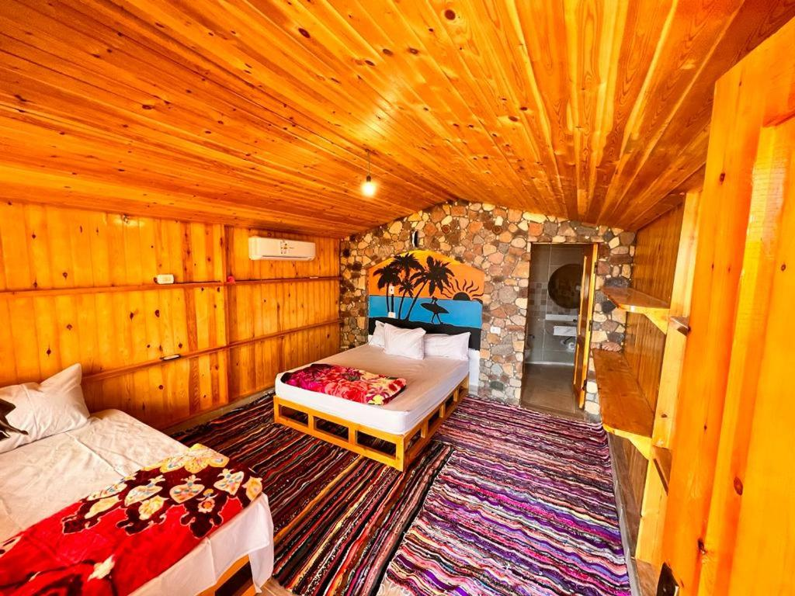
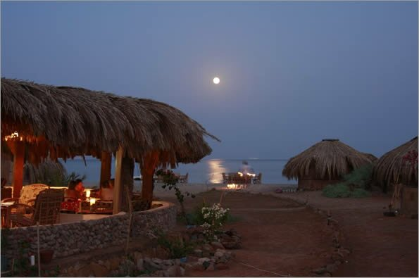
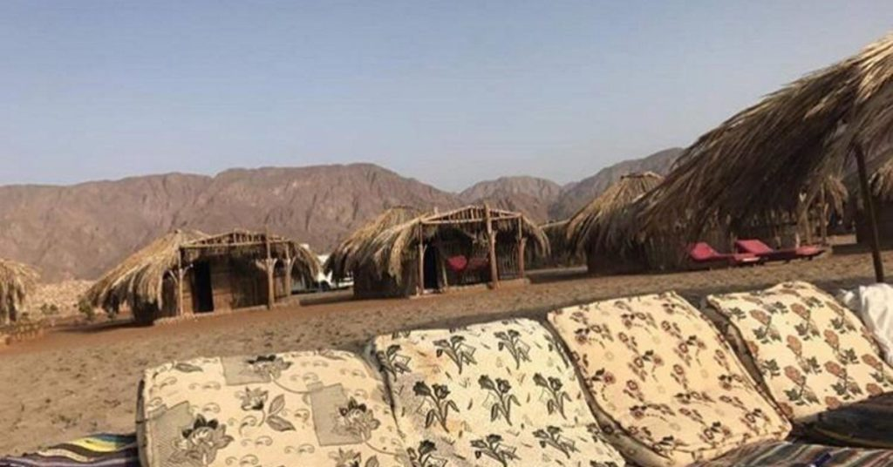
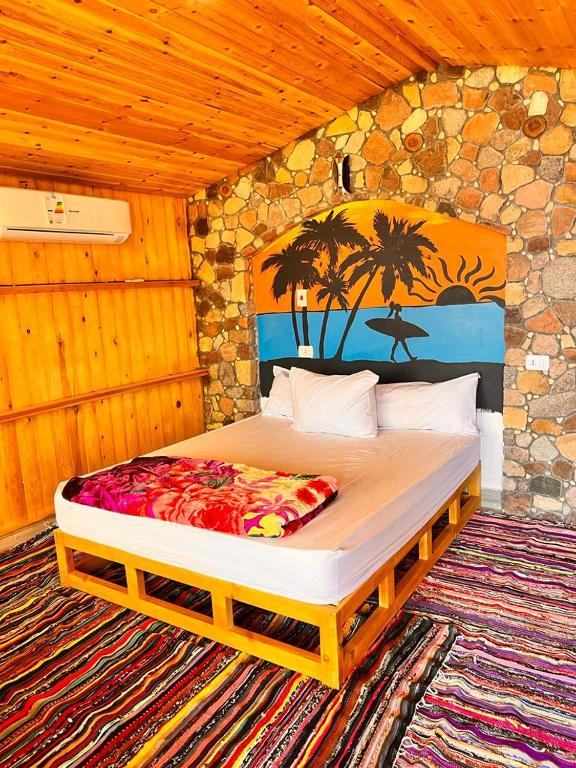
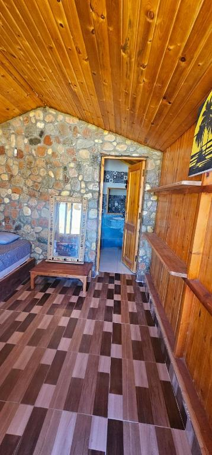
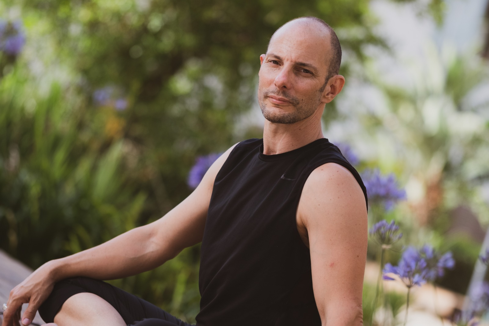

ארבעה לילות של תרגול, ים ומדבר בחוף שקט בדרום סיני. בוקר וערב על המזרן, ובין לבין מים צלולים, שקט וארוחות טריות של המקום.
סוף אוקטובר הוא הזמן הטוב ביותר בסיני. החום של הקיץ כבר נשבר, המים עדיין חמימים, והחוף כמעט ריק. ארבעה ימים בלי רעש, בלי מסכים ובלי תוכניות, רק תרגול, ים ושמש.
תרגול בוקר מעמיק ותרגול ערב רך יותר, מול הים. מתאים למי שכבר מתרגלים, בכל רמה.
חושות קש פשוטות ונעימות או בונגלו עץ עם מזגן ומקלחת. שקט מוחלט, מפרץ שקט ורדוד, הרי אדום מנגד.
דגים מהים, ירקות מהגינה של המקום, פיתות מהטאבון. אוכלים יחד, בקצב איטי.
עדן ביץ' קמפ יושב על רצועת החוף אל מחש, כ-47 קילומטרים דרומית למעבר טאבה, בין הרי סיני למפרץ אילת. מקום קטן ומטופח, מהאהובים על ישראלים בסיני, עם מארחים חמים ואוכל מצוין.
חוף אל מחש נמצא במחצית הדרך בין טאבה לנואיבה. נסיעה של כ-40 עד 45 דקות מהגבול, במונית שמזמינים מראש.
מיקום מדויק במפה:
פתיחה במפות גוגל
הקמפ ברשתות:
עמוד הפייסבוק של הקמפ
אינסטגרם
כתבה על המקום באתר סיני וייבס





שני תרגולים ביום, ובין לבין זמן חופשי. הלו"ז המדויק ייסגר עם המשתתפים, וייתכנו שינויים קלים.
| יום | מה קורה |
|---|---|
| יום רביעי 28.10 | הגעה במהלך היום, התמקמות בחושות. תרגול פתיחה בשעה 17:00 וארוחת ערב משותפת. |
| יום חמישי 29.10 | תרגול בוקר 8:00 עד 10:00, ארוחת בוקר, ים וזמן חופשי. תרגול ערב 17:00 עד 18:30. |
| יום שישי 30.10 | תרגול בוקר 8:00 עד 10:00, ארוחת בוקר, ים וזמן חופשי. תרגול ערב 17:00 עד 18:30. |
| שבת 31.10 | תרגול בוקר 8:00 עד 10:00, ארוחת בוקר, ים וזמן חופשי. תרגול ערב 17:00 עד 18:30. |
| יום ראשון 1.11 | תרגול בוקר קצר, ארוחת בוקר ופרידה. יציאה לטאבה עד הצהריים. |

מורה בכיר ליוגה ולתנועה כ-20 שנה. בוגר תוכנית המורים של בית הספר לבריגהו יוגה, מלמד פאוור יוגה, אשטנגה ויניאסה, נשימה ומדיטציה, עם רקע בצ'י קונג, בטאי צ'י ובשיטת פלדנקרייז.
השיעורים שלו משלבים אווירה קלילה עם עבודה מדויקת ומעמיקה. במילים שלו, שילוב נכון בין קלילות, התמדה ומחויבות הוא בסיס איתן לאושר.
מלמד בתל אביב ובגבעתיים, בסטודיו שלו ובמרכזי יוגה וספורט בעיר.
המחיר לאדם, לארבעה לילות, כולל לינה ושני תרגולים ביום. מספר המקומות מוגבל.